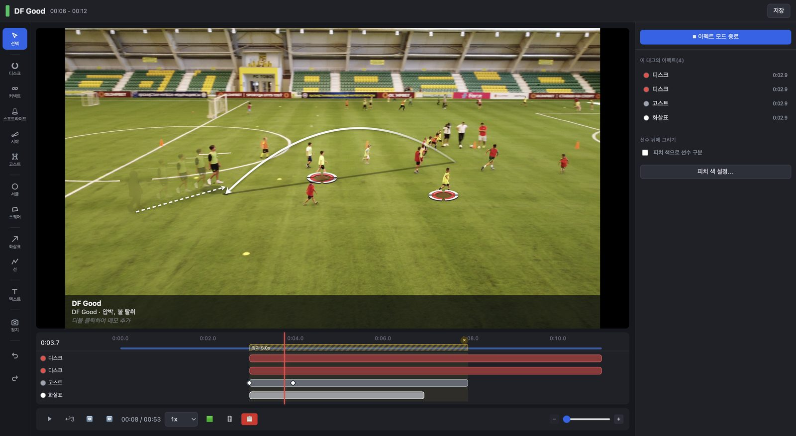
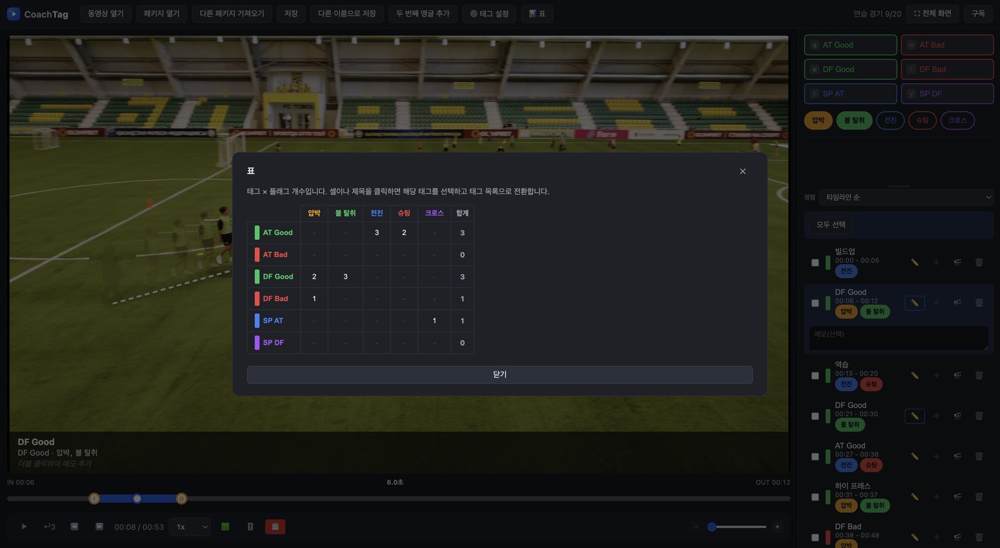

시야
선수가 보는 방향을 발밑이나 눈높이에서 콘으로 표시.
J1 리그 우승을 경험한 프로 분석관이 현장에서 실제로 쓰는 기능만 하나의 앱에 담았습니다. 비싼 분석 장비 없이도 같은 일을 할 수 있습니다.

공격과 수비의 좋은 장면과 나쁜 장면, 세트피스 등을 멈추지 않고 기록합니다. 플래그(압박, 볼 탈취, 슈팅 등)를 더해 세세하게 분류할 수 있습니다.

커넥트, 스포트라이트, 화살표, 텍스트, 존. 피치 색을 인식해 선수 발밑에 놓인 것처럼 그립니다.
카메라가 움직여도 발밑의 디스크가 선수를 따라갑니다. 고스트로 선수를 '있어야 할 위치'로 옮겨 보여 줄 수도 있습니다.

표의 셀을 클릭하면 해당 장면을 한꺼번에 선택해 플레이리스트로 만들 수 있습니다.

선수가 보는 방향을 발밑이나 눈높이에서 콘으로 표시.
높이와 휘어짐을 조합한 화살표와 땅의 그림자.
영상을 멈춰 설명하고, 이펙트를 시간에 따라 움직입니다.
여러 경기를 모아 태그 보드로 한눈에.
두 대의 카메라를 동기화해 나란히 확인하고 내보내기.
그림이 들어간 클립을 AirDrop, 사진, 파일로.
"현장에서 실제로 쓰는 기능만, 하나의 앱에."
영상은 외부 서버로 보내지 않습니다. 태깅, 그리기, 내보내기 모두 기기 안에서 이루어집니다.
두 요금제 모두 Mac과 iPad에서 사용할 수 있습니다. 첫 달은 무료입니다.